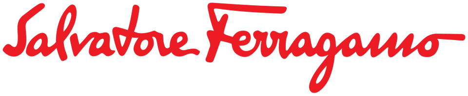
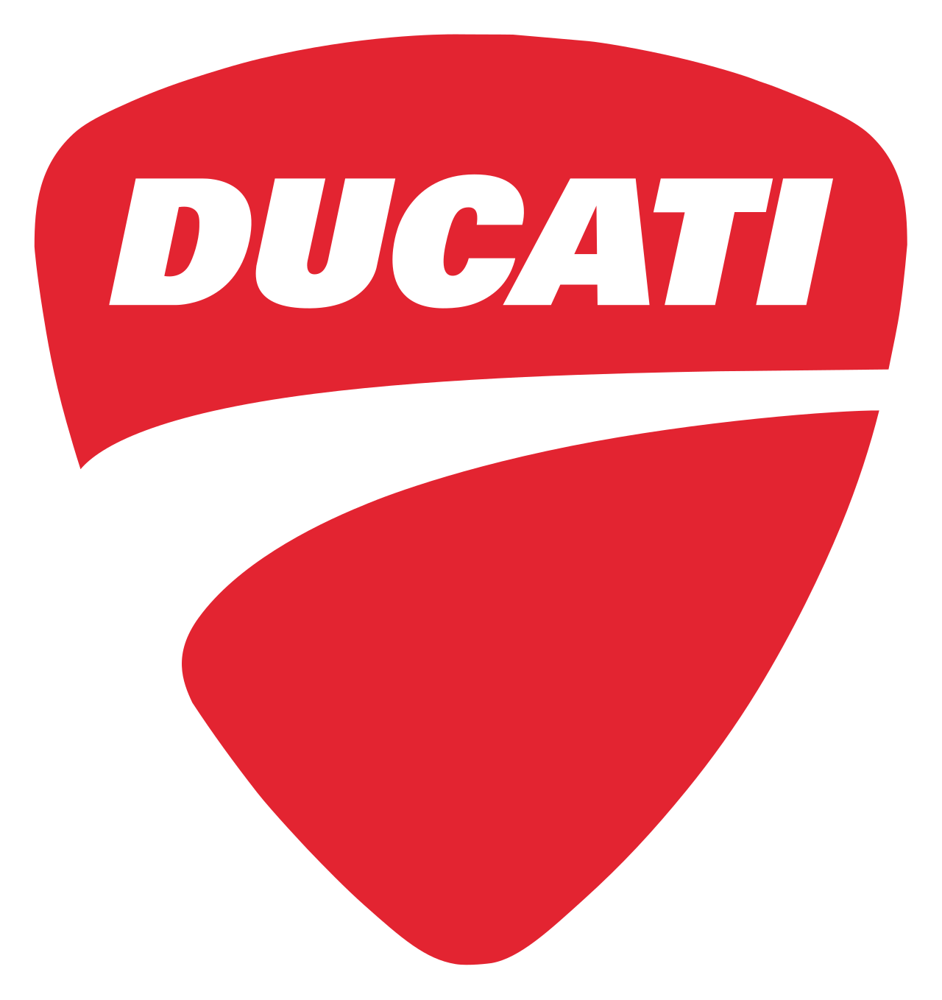

이탈리아 브랜드 73
이탈리아에서 시작한 브랜드 73개를 로고와 함께 모았습니다. 대표적인 이탈리아 브랜드로는 페라리(FERRARI), 피아트(Fiat), 람보르기니(Lamborghini), 알파 로메오(Alfa Romeo), 구찌(GUCCI), 마세라티(Maserati) 등이 있습니다. 수록 기준은 검수된 브랜드 설명이나 공식 웹사이트가 일치하는 위키데이터 개체에서 기원 국가가 확인된 경우로 한정했습니다.
다른 국가 보기
국가별 전체 →산업별로는 모빌리티 18개, 패션·럭셔리 18개, 식음료 9개, 스포츠·아웃도어 8개 순입니다. 설립연도가 확인된 브랜드는 65개이며 가장 오래된 곳은 1846년, 가장 최근은 2007년에 시작했습니다. 시기별로는 1900년 이전 7개, 1900~1949년 26개, 1950~1999년 30개, 2000년 이후 2개입니다. 수록 자료로는 로고 이미지 70개, 로고 변천 자료 16개, 연혁 타임라인 13개를 갖췄습니다. 이 가운데 65개는 공식 웹사이트가 일치하는 위키데이터 개체로 연결해 두었습니다.
산업별 이탈리아 브랜드
이탈리아 브랜드 목록
 구찌GUCCI이탈리아 · 1921년
구찌GUCCI이탈리아 · 1921년구찌(Gucci)는 이탈리아 피렌체에 본사를 둔 럭셔리 패션 하우스이다.
 조르지오 아르마니GIORGIO ARMANI이탈리아 · 1975년
조르지오 아르마니GIORGIO ARMANI이탈리아 · 1975년조르지오 아르마니(Giorgio Armani)는 1975년 밀라노에서 설립된 이탈리아 럭셔리 패션 하우스이다.
 페라리FERRARI이탈리아 · 1947년
페라리FERRARI이탈리아 · 1947년페라리(Ferrari)는 이탈리아 마라넬로에 본사를 둔 럭셔리 스포츠카 제조사이다.
 알레시ALESSI이탈리아 · 1921년
알레시ALESSI이탈리아 · 1921년알레시(Alessi)는 1921년 조반니 알레시가 이탈리아 오메냐에서 설립한 주방·생활용품 디자인 브랜드다.
 에르메네질도 제냐Zegna이탈리아 · 1910년
에르메네질도 제냐Zegna이탈리아 · 1910년제냐(Zegna)는 1910년 이탈리아에서 모직 원단 공장으로 출발한 럭셔리 남성복 브랜드이다.
보테가 베네타Bottega Veneta이탈리아 · 1966년보테가 베네타(Bottega Veneta)는 1966년 이탈리아 비첸차에서 설립된 럭셔리 가죽제품 브랜드이다.
 디젤Diesel이탈리아 · 1978년
디젤Diesel이탈리아 · 1978년디젤(Diesel)은 1978년 렌조 로소가 이탈리아 브레간체에서 설립한 데님 중심의 컨템포러리 패션 브랜드다.
돌체앤가바나Dolce & Gabbana이탈리아 · 1985년돌체앤가바나는 도메니코 돌체와 스테파노 가바나가 1985년 이탈리아 밀라노에서 선보인 럭셔리 패션 하우스다.

살바토레 페라가모Ferragamo이탈리아 · 1927년살바토레 페라가모(Salvatore Ferragamo)는 1927년 살바토레 페라가모가 피렌체에 세운 이탈리아 럭셔리 슈즈·패션 하우스이다.

두카티DUCATI이탈리아두카티(Ducati)는 이탈리아 볼로냐에 본사를 둔 고성능 오토바이 제조 브랜드이다.
우니에우로Unieuro이탈리아 · 1967년우니에우로(Unieuro)는 이탈리아의 가전·전자제품 양판점 체인으로 현재 Fnac Darty 그룹에 속한다.
 코치넬레Coccinelle이탈리아 · 1978년
코치넬레Coccinelle이탈리아 · 1978년코치넬레(Coccinelle)는 1978년 이탈리아 파르마 인근에서 설립된 가죽 핸드백·액세서리 브랜드이다.
막스마라MaxMara이탈리아 · 1951년막스마라(MaxMara)는 1951년 아킬레 마라모티가 설립한 이탈리아 여성 패션 그룹이다.
 펜디Fendi이탈리아 · 1925년
펜디Fendi이탈리아 · 1925년펜디(Fendi)는 1925년 로마에서 설립된 이탈리아 럭셔리 모피·가죽제품 하우스이다.
인티미시미Intimissimi이탈리아 · 1996년인티미시미(Intimissimi)는 합리적 가격대의 란제리·이너웨어를 판매하는 이탈리아 속옷 브랜드이다.
 오니버스Oniverse이탈리아
오니버스Oniverse이탈리아오니버스(Oniverse)는 칼체도니아·인티미시미·테제니스 등을 보유한 이탈리아의 다각화 패션·리테일 그룹이다.
네파NEPA이탈리아 · 1996년네파(NEPA)는 1996년 이탈리아에서 시작해 2005년부터 한국에서 본격 전개된 아웃도어 브랜드다.
 파트리지아 페페Patrizia Pepe이탈리아 · 1993년
파트리지아 페페Patrizia Pepe이탈리아 · 1993년파트리지아 페페(Patrizia Pepe)는 1993년 피렌체에서 설립된 이탈리아 프레타포르테 패션 브랜드이다.
키코밀라노Kiko Milano이탈리아키코밀라노(Kiko Milano)는 이탈리아 베르가모에서 시작된 색조 중심 화장품 브랜드이다.
 바릴라Barilla Group이탈리아 · 1877년
바릴라Barilla Group이탈리아 · 1877년바릴라(Barilla Group)는 1877년 파르마의 빵집으로 시작해 성장한 이탈리아의 다국적 식품 기업이다.
 아바르트Abarth이탈리아 · 1949년
아바르트Abarth이탈리아 · 1949년아바르트(Abarth)는 1949년 이탈리아계 오스트리아인 Carlo Abarth가 설립한 이탈리아의 레이싱카·도로용 자동차 제조사이자 고성능…
 파가니Pagani Automobili이탈리아 · 1998년
파가니Pagani Automobili이탈리아 · 1998년파가니(Pagani Automobili)는 고성능 하이퍼카와 첨단 탄소섬유 부품을 전문으로 제조하는 이탈리아의 자동차 회사이다.
 피닌파리나Pininfarina이탈리아 · 1930년
피닌파리나Pininfarina이탈리아 · 1930년피닌파리나(Pininfarina)는 이탈리아 토리노 근교 캄비아노에 본사를 둔 자동차 디자인 회사이자 코치빌더이다.
 누텔라Nutella이탈리아 · 1964년
누텔라Nutella이탈리아 · 1964년누텔라(Nutella)는 설탕을 넣은 헤이즐넛 코코아 스프레드를 만드는 이탈리아 브랜드이다.
 이탈리아 방송 협회RAI이탈리아 · 1924년
이탈리아 방송 협회RAI이탈리아 · 1924년이탈리아 방송 협회(RAI)는 이탈리아 전 지역을 방송 대상으로 하는 이탈리아의 공영 방송이다.
 인테사 상파울로Gruppo Intesa Sanpaolo이탈리아 · 2007년
인테사 상파울로Gruppo Intesa Sanpaolo이탈리아 · 2007년인테사 상파울로(Gruppo Intesa Sanpaolo)는 이탈리아의 국제 은행 그룹이다.
 드 토마소De Tomaso이탈리아 · 1959년
드 토마소De Tomaso이탈리아 · 1959년드 토마소(De Tomaso)는 1959년 이탈리아 모데나에서 Alejandro de Tomaso가 설립한 스포츠카 제조업체이다.
 베르사체Versace이탈리아 · 1978년
베르사체Versace이탈리아 · 1978년베르사체(Versace)는 1978년 Gianni Versace가 설립한 이탈리아의 럭셔리 패션 기업이다.
 모스키노Moschino이탈리아 · 1983년
모스키노Moschino이탈리아 · 1983년모스키노(Moschino)는 1983년 Franco Moschino가 밀라노에서 설립한 이탈리아의 럭셔리 패션 하우스이다.
 베스파Vespa이탈리아 · 1946년
베스파Vespa이탈리아 · 1946년베스파(Vespa)는 이탈리아의 스쿠터·모페드 브랜드이다.
 불가리Bulgari이탈리아 · 1884년
불가리Bulgari이탈리아 · 1884년불가리(Bulgari)는 1884년에 설립된 이탈리아의 럭셔리 패션 하우스이다.
 페로니Peroni Brewery이탈리아 · 1846년
페로니Peroni Brewery이탈리아 · 1846년페로니(Peroni Brewery)는 1846년 Francesco Peroni가 이탈리아 Vigevano에서 세운 이탈리아의 맥주 양조…
 페레로Ferrero SpA이탈리아 · 1946년
페레로Ferrero SpA이탈리아 · 1946년페레로(Ferrero SpA)는 이탈리아 피에몬테의 알바에 본사를 둔 다국적 기업이다.
 에니Eni이탈리아 · 1953년
에니Eni이탈리아 · 1953년에니(Eni)는 이탈리아 로마에 본사를 둔 다국적 에너지 기업이다.
 디아도라Diadora이탈리아 · 1948년
디아도라Diadora이탈리아 · 1948년디아도라(Diadora)는 1948년 설립된 이탈리아의 스포츠웨어·신발 제조 기업이다.
 로토 스포르트 이탈리아Lotto Sport Italia이탈리아 · 1973년
로토 스포르트 이탈리아Lotto Sport Italia이탈리아 · 1973년로토 스포르트 이탈리아(Lotto Sport Italia)는 이탈리아 트레비조 인근 트레비냐노에 본사를 둔 스포츠 용품 제조업체이다.
 발렌티노Valentino이탈리아 · 1960년
발렌티노Valentino이탈리아 · 1960년발렌티노(Valentino)는 1960년 발렌티노 가라바니가 설립한 이탈리아의 럭셔리 패션 하우스이다.
 드롱기De'Longhi이탈리아 · 1902년
드롱기De'Longhi이탈리아 · 1902년드롱기(De'Longhi)는 이탈리아 트레비소에 본사를 둔 소형 가전 제조사이다.
 루이지 라바짜Lavazza이탈리아 · 1895년
루이지 라바짜Lavazza이탈리아 · 1895년루이지 라바짜(Lavazza)는 1895년 이탈리아 토리노에서 Luigi Lavazza가 창업한 이탈리아의 커피 제품 제조업체이다.
람보르기니Lamborghini이탈리아 · 1948년람보르기니(Lamborghini)는 슈퍼카를 제조하는 이탈리아의 자동차 제조사이다.
 알리탈리아Alitalia이탈리아 · 1946년
알리탈리아Alitalia이탈리아 · 1946년알리탈리아(Alitalia)는 1946년에 설립되어 2021년에 폐업한 이탈리아의 전 국영 항공사이자 국책 항공사이다.
 피렐리Pirelli이탈리아 · 1872년
피렐리Pirelli이탈리아 · 1872년피렐리(Pirelli)는 이탈리아 밀라노에 본사를 둔 다국적 타이어 제조업체이다.
베네통Benetton Group이탈리아 · 1965년베네통(Benetton Group)은 1965년에 설립된 이탈리아의 글로벌 패션 브랜드이다.
 아프릴리아Aprilia이탈리아 · 1945년
아프릴리아Aprilia이탈리아 · 1945년아프릴리아(Aprilia)는 이탈리아 노알레에 본사를 둔 오토바이·스쿠터 제조 브랜드이다.
 트렌이탈리아Trenitalia이탈리아 · 2000년
트렌이탈리아Trenitalia이탈리아 · 2000년트렌이탈리아(Trenitalia)는 이탈리아의 국유 철도 운영사이다.
 란치아Lancia이탈리아 · 1906년
란치아Lancia이탈리아 · 1906년란치아(Lancia)는 1906년 토리노에서 설립된 이탈리아의 자동차 제조사로, 현재 Stellantis Europe 산하 브랜드이다.
 아레나Arena이탈리아 · 1973년
아레나Arena이탈리아 · 1973년아레나(Arena)는 1973년 Horst Dassler가 Adidas 창업자의 아들로서 만든 이탈리아의 경기용 수영복 제조 회사이다.
 피아트Fiat이탈리아 · 1899년
피아트Fiat이탈리아 · 1899년피아트(Fiat)는 이탈리아의 자동차 제조사이다.